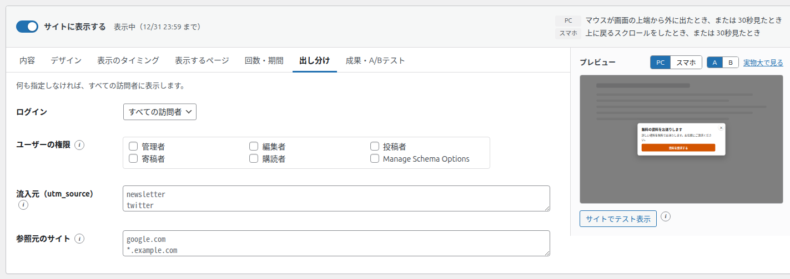
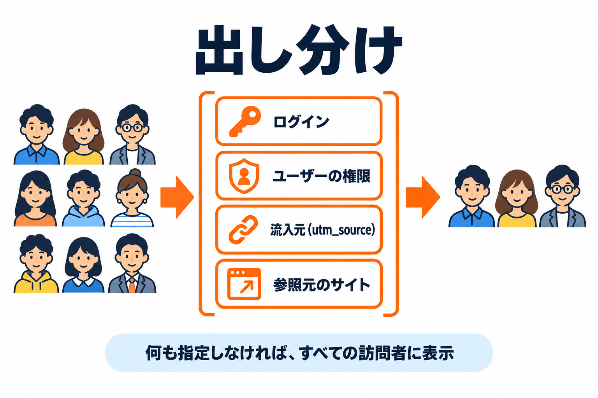

出し分けタブ
バナーを表示する訪問者を、ログインの状態・ユーザーの権限・流入元・参照元のサイトで絞り込むタブです。何も指定しなければ、すべての訪問者に表示します。


項目の一覧
| 項目 | 種類 | 初期値 | 空のとき |
|---|---|---|---|
| ログイン | プルダウン | すべての訪問者 | - |
| ユーザーの権限 | チェックボックスの一覧 | なし | 権限で絞りません |
| 流入元（utm_source） | 複数行（1行に1つ） | 空 | 流入元で絞りません |
| 参照元のサイト | 複数行（1行に1つ） | 空 | 参照元で絞りません |
ログイン
| 選択肢 | 表示する相手 |
|---|---|
| すべての訪問者（初期値） | ログインしているかどうかに関係なく表示します。 |
| ログイン中のみ | サイトにログインしている人にだけ表示します（会員向けの案内など）。 |
| 未ログインのみ | ログインしていない人にだけ表示します（会員登録の案内など）。 |
ユーザーの権限
チェックした権限（管理者・編集者・投稿者・寄稿者・購読者など、サイトにある権限）の、ログイン中のユーザーにだけ表示します。何も選ばなければ、権限で絞りません。「ログイン」で「未ログインのみ」を選んでいるときは、この項目は表示されません。
流入元（utm_source）
ページの URL に付いている utm_source= の値が一致した人にだけ表示します。メールマガジンや SNS の投稿に付けたリンクから来た人だけに表示する、といった使い方をします。
- 1行に1つずつ書きます。大文字と小文字は区別しません。
*はどんな文字にも当てはまります（例:news*は newsletter・news_202610 などに当てはまります）。
判断するのはそのページの URLです。リンクから来た最初のページの URL には utm_source が付いていますが、同じ人がサイトの中の別のページに移ると、そのページの URL には付いていないため、表示されません。
参照元のサイト
どのサイトから来た人に表示するかを、ドメインで指定します。
google.comと書くと、www.google.comなど、その下のドメインも含みます。*.example.comのように*も使えます。https:// から書いても構いません（ドメインの部分で判断します）。
ブラウザやリンクの設定によっては参照元が送られないため、そのサイトから来ていても一致しない人がいます。また、サイトの中でページを移ると、参照元は自分のサイトになります。
組み合わせたとき
複数の項目を指定したときは、すべてに当てはまる人にだけ表示します。例えば「ログイン中のみ」と流入元「newsletter」を指定すると、ログインしていて、かつ URL の utm_source が newsletter の人にだけ表示します。
出し分けの条件は、ページが作られるときに判断します。ページをまるごと保存して使い回す仕組み（ページキャッシュ）を使っているサイトでは、条件どおりに出し分けられないことがあります（トラブルシューティング）。